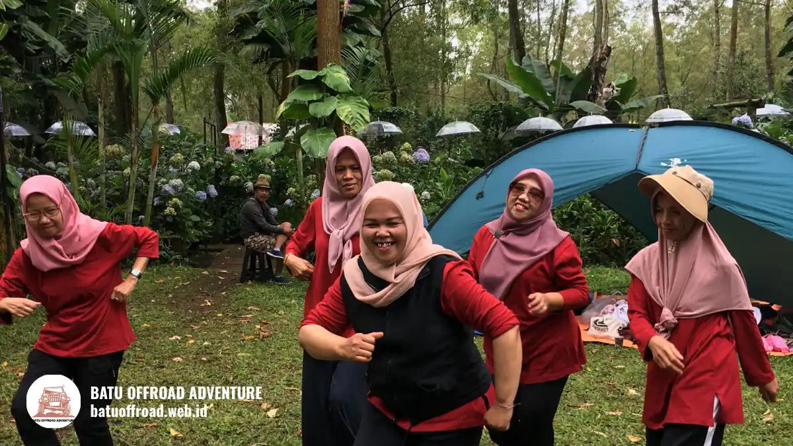

Outbound Coban Talun Batu, Team Building di Alam Terbuka
Outbound Coban Talun di Kota Batu paling efektif bila peserta dibagi menjadi tim kecil, umumnya sekitar 8 sampai 12 orang per kelompok. Jumlah total peserta mengikuti kapasitas lokasi dan instruktur yang dikonfirmasi Batu Offroad Adventure, sehingga setiap peserta tetap aktif, terdampingi, dan aman.
- Outbound Coban Talun adalah kegiatan belajar kelompok melalui permainan dan tantangan di kawasan alam Kota Batu.
- Peserta dibagi menjadi tim kecil agar semua orang terlibat dan terdampingi instruktur.
- Manfaat utamanya mencakup kerja sama, komunikasi, kepercayaan, dan kepemimpinan.
- Outbound dapat digabung dengan offroad dan camping sesuai tujuan rombongan.
- Jumlah peserta, durasi, dan harga paket harus dikonfirmasi langsung ke operator.
Apa Itu Outbound Coban Talun?
Outbound Coban Talun adalah kegiatan pelatihan berbasis permainan dan tantangan fisik ringan yang dilakukan di kawasan Coban Talun, Kota Batu, Jawa Timur.
Kegiatan ini mengajak peserta belajar lewat pengalaman langsung, bukan ceramah. Peserta menyelesaikan tugas bersama, lalu dipandu instruktur untuk merefleksikan apa yang terjadi dalam tim mereka.
Format ini dipakai oleh perusahaan, sekolah, komunitas, dan keluarga besar. Tujuannya beragam, mulai dari mempererat hubungan, melatih komunikasi, hingga menyegarkan suasana setelah rutinitas kerja atau belajar.
Batasannya perlu dipahami sejak awal. Outbound bukan pengganti pelatihan teknis atau konseling, dan hasilnya sangat bergantung pada kualitas fasilitator serta kesiapan peserta.
Mengapa Coban Talun Cocok untuk Team Building?
Coban Talun cocok untuk team building karena udara sejuk, ruang terbuka, dan suasana alam Kota Batu membantu peserta lebih santai, fokus, dan terbuka berinteraksi.
Kota Batu sudah lama dikenal sebagai tujuan wisata dan kegiatan rombongan di Malang Raya. Akses dari Kota Malang relatif mudah, sehingga rombongan dari berbagai daerah dapat menjangkaunya.
Lingkungan alam juga memutus kebiasaan peserta yang terbiasa dengan layar dan ruang rapat. Peserta cenderung lebih aktif bergerak dan berbicara langsung dengan rekan satu tim.
Kondisi cuaca dan medan tetap harus diperhitungkan. Operator biasanya menyesuaikan jenis game dengan keadaan lapangan pada hari pelaksanaan.
Apa Saja Manfaat Outbound di Alam Terbuka?
Manfaat outbound di alam terbuka mencakup peningkatan kerja sama, komunikasi, kepercayaan, kepemimpinan, dan kemampuan memecahkan masalah dalam kelompok.
Kerja sama terbentuk karena setiap game dirancang agar tidak bisa diselesaikan sendirian. Komunikasi terlatih saat tim harus berbagi instruksi dengan jelas dalam waktu terbatas.
Kepercayaan tumbuh ketika peserta bergantung pada rekan dalam permainan tertentu. Kepemimpinan muncul secara alami karena peran ketua tim dapat bergantian.
Manfaat ini tidak otomatis bertahan selamanya. Efek terbaik biasanya muncul bila hasil refleksi ditindaklanjuti dalam kebiasaan kerja atau belajar sehari-hari.
Jenis Aktivitas dan Game Apa yang Tersedia?
Aktivitas outbound umumnya berupa game kelompok, tantangan rintangan, permainan strategi, dan sesi refleksi. Pilihan pastinya mengikuti paket yang disediakan operator dan kondisi lapangan.
Game kelompok biasanya melatih koordinasi dan komunikasi. Tantangan rintangan melatih keberanian dan saling mendukung. Permainan strategi melatih pengambilan keputusan di bawah batas waktu.
Sesi refleksi sama pentingnya dengan permainan. Instruktur mengajak peserta menyimpulkan pelajaran, lalu mengaitkannya dengan situasi nyata di kantor atau sekolah.
Daftar permainan lengkap sebaiknya diminta langsung dari Batu Offroad Adventure agar sesuai tujuan dan kemampuan peserta.
Siapa yang Cocok Mengikuti Outbound Coban Talun?
Outbound Coban Talun cocok untuk karyawan perusahaan, siswa sekolah, mahasiswa, komunitas, organisasi, dan keluarga besar yang ingin belajar bersama lewat aktivitas luar ruangan.
Untuk tim kerja, outbound membantu mengenalkan anggota baru dan memperbaiki komunikasi antar divisi. Untuk sekolah, kegiatan ini melatih karakter, disiplin, dan kerja sama siswa.
Peserta dengan kondisi kesehatan tertentu perlu menyampaikan informasi sebelum acara. Panitia sebaiknya mengumpulkan data tersebut agar instruktur dapat menyesuaikan tantangan.

Tim peserta team building di Kota Batu bersama instruktur
Bagaimana Cara Kerja Satu Sesi Outbound?
Satu sesi outbound berjalan dengan urutan pembukaan, pemanasan, game inti, refleksi, dan penutupan, dipandu instruktur yang menjelaskan aturan keselamatan sebelum permainan dimulai.
Pembukaan berisi perkenalan dan pembagian tim. Pemanasan mencairkan suasana agar peserta nyaman. Game inti menjadi bagian terbesar dari acara.
Refleksi dilakukan setelah game, ketika peserta membahas apa yang berhasil dan apa yang perlu diperbaiki. Penutupan merangkum pelajaran dan menyepakati langkah lanjutan.
Faktor Apa yang Menentukan Paket Outbound?
Paket outbound ditentukan oleh jumlah peserta, durasi, jenis aktivitas, fasilitas tambahan, dan jadwal pelaksanaan. Harga pasti hanya dapat dikonfirmasi langsung oleh operator.
Jumlah peserta memengaruhi kebutuhan instruktur dan peralatan. Durasi menentukan berapa banyak game dan sesi refleksi yang dapat dijalankan.
Fasilitas tambahan seperti offroad, camping, konsumsi, atau dokumentasi juga memengaruhi susunan paket. Musim liburan dan akhir pekan dapat memengaruhi ketersediaan jadwal.
Panitia sebaiknya menyiapkan tujuan acara, perkiraan jumlah peserta, dan tanggal alternatif sebelum menghubungi operator.
Apa Kesalahan Umum saat Menyelenggarakan Outbound?
Kesalahan umum penyelenggara outbound adalah tujuan acara yang tidak jelas, jadwal terlalu padat, peserta tidak diberi informasi persiapan, dan sesi refleksi dilewatkan.
Tanpa tujuan jelas, game terasa seperti hiburan saja. Jadwal terlalu padat membuat peserta lelah sehingga pembelajaran tidak tertangkap.
Kesalahan lain adalah mengabaikan pakaian dan perlengkapan peserta, serta tidak menyiapkan rencana cadangan bila hujan turun. Panitia juga sering lupa menunjuk satu penghubung yang berkomunikasi dengan operator.
Outbound, Offroad, dan Camping: Apa Bedanya?
Outbound berfokus pada pembelajaran tim lewat game, offroad berfokus pada pengalaman berkendara di medan alam, dan camping berfokus pada menginap serta kebersamaan di area terbuka.
Ketiganya dapat digabung dalam satu acara. Outbound menjadi inti pembelajaran, offroad menambah keseruan, dan camping memperpanjang waktu interaksi di luar jam acara.
Perbedaan utama terletak pada tujuan. Bila sasaran Anda adalah kekompakan tim, outbound sebaiknya menjadi porsi terbesar. Bila sasarannya rekreasi, porsi offroad dan camping dapat diperbesar.
Tips Apa yang Perlu Disiapkan Sebelum Berangkat?
Persiapan penting meliputi tujuan acara, daftar peserta, informasi kesehatan, pakaian olahraga, alas kaki tertutup, perlengkapan hujan, air minum, dan rencana transportasi rombongan.
Tentukan satu penanggung jawab acara sebagai penghubung dengan operator. Bagikan informasi teknis kepada peserta sehari sebelumnya.
Periksa perkiraan cuaca melalui sumber resmi seperti BMKG sebelum hari pelaksanaan. Siapkan juga kotak P3K dan tanyakan standar keselamatan yang diterapkan operator.
Kesimpulan
Outbound Coban Talun di Kota Batu adalah pilihan kegiatan kelompok yang menggabungkan permainan, alam, dan refleksi. Hasil terbaik datang dari tujuan yang jelas, tim kecil, jadwal realistis, dan fasilitator yang baik.
Mulailah dengan menentukan sasaran acara, lalu konsultasikan jumlah peserta, durasi, dan paket kepada operator.
Ingin merasakan serunya langsung? Hubungi Batu Offroad Adventure di 0812-3398-9707 untuk info paket dan booking.
FAQ
-
Berapa durasi outbound?
Durasi bervariasi, dari beberapa jam hingga satu hari penuh atau lebih bila digabung camping. Pilihan durasi disesuaikan dengan tujuan dan kondisi peserta. -
Apakah ada instruktur?
Kegiatan outbound umumnya dipandu instruktur yang menjelaskan aturan, mengawasi keselamatan, dan memfasilitasi refleksi. Konfirmasikan jumlah instruktur saat memesan paket. -
Bagaimana cara booking Batu Offroad Adventure?
Hubungi Batu Offroad Adventure di 0812-3398-9707. Siapkan perkiraan jumlah peserta, tanggal, dan tujuan acara agar penawaran paket dapat disusun dengan tepat.
Artikel Terkait